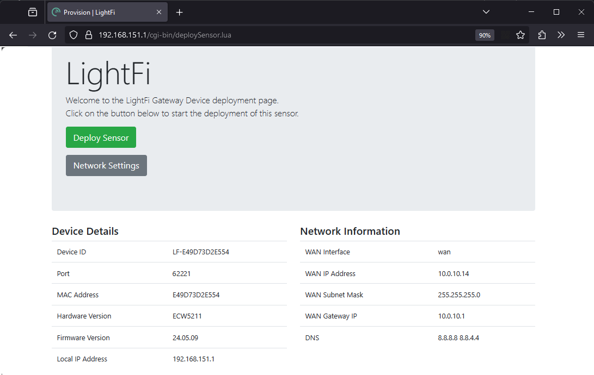

BASE sensor provisioning
[Note: If ordering BASE sensors for a whole building it is possible to have pre-provisioned BASE sensors, with your required IP network and BACnet settings, shipped directly from LightFi, saving engineer time on your install. Please contact LightFi to arrange this.]
To provision the BASE sensor on LightFi’s Portal, you will need the following:
- BASE sensor powered and connected to the internet [Note: you may need to change the ip settings on the base sensor to connect to the internet i.e. change from dhcp to static ip, please follow the guide as normal, the BASE network settings are documented at step 4.]
- Ethernet cable
- Physical access to the BASE sensor
- Laptop computer with an Ethernet port and WiFi connection
1 - Power sensor
Please ensure the BASE sensor is powered and connected to the internet. The LEDs indicate the status of the BASE sensor:
- First LED on – the BASE sensor indicates power
- Second LED on – the BASE sensor is connected to the internet
- Third LED on – the BASE sensor is detecting occupancy. Once plugged in, please allow 5 minutes for the boot sequence to finish before any troubleshooting.
2 - Setup service port connection
[Note: Before you make the changes to your network configuration on your computer, note down the existing network settings, this will help when resetting them back afterwards.]
Please ensure your computer is connected to the internet e.g. via WiFi. Setup your computer’s wired (Ethernet) network settings to enable connection to the BASE sensor via its Service Port. Change the LAN configuration settings on your computer to “manual” and use the static IP Address: 192.168.151.2 and press Apply. (Use a default Subnet Mask of 255.255.255.0 and leave the other settings empty, as there is no internet connection from the BASE sensor via the Service Port for security reasons). Your LAN settings are located in:
- Apple: System Preferences > Network > {your LAN Service} > Configure IPv4 : Manually
- Windows: Windows Settings > Network & Internet > Advanced network settings : Change adapter options > Ethernet : Properties > Internet Protocol Version 4 (TCP/IPv4) : Properties > Use the following IP address
3 - Connect to sensor

Connect an Ethernet cable from your computer to the Service Port on the BASE sensor. Please ensure the PoE Port is also connected to the internet.
4 - Launch Provisioner
Please open your web browser and enter http://192.168.151.1 into the address bar. You will be greeted by the BASE sensor’s service page, indicating that you are now connected to the BASE sensor and the BASE sensor is itself connected to the internet.

If the BASE sensor greeting page says “No Internet!”, please check the BASE sensor’s PoE Port is connected to the internet and refresh the web-page. You may need to change the device network settings for your network/internet setup, if so click the "Network Settings" button, you will require the local config password shipped with your device (the password can be changed from the Network Settings page).
To begin provisioning your BASE sensor on LightFi’s Portal, press “Deploy Sensor”. Please ensure your computer is connected to the internet e.g. via WiFi. You will be redirected to the LightFi Portal, where you can login to your LightFi account and create the sensor.
5 - Select location
In the top left corner, select the building and floor where you want to create this BASE sensor using the dropdown. Then press “Next”.
6 - Add sensor details
Give the BASE sensor a name (usually the name of the area it covers), and press “Next”. Click on the floorplan to give the sensor a position (as close to where it is or to be located so that others can find it later), and then press “Preview”.
7 - Check details
Check you’re happy with the details you’ve entered and the location tree in which you’re creating the sensor.
8 - Confirm
Press “Confirm Details” and then “Create” to provision the sensor. Your browser may ask for security confirmation, in which case you will need to allow the connection by pressing “Send Anyway” (or similar).
9 - Provisioning
The BASE sensor is now being provisioned. Please do not unplug the BASE sensor from the computer (or internet) until the web page says that the setup has been completed. The BASE sensor will then reboot.
The sensor is now provisioned and should be visible on the LightFi portal. (Please allow up to 5 minutes for the BASE sensor to appear on the LightFi Portal and 10 minutes for the first data to arrive.)